avr
Своё. Для своих.
Брендбук экосистемы avr: музыка, видео, мессенджер и сайты для небольшой компании друзей. Здесь всё, что нужно, чтобы любая новая вещь выглядела своей: звезда, надпись, цвет, шрифт, движение и где что использовать.
Свои сервисы вместо чужих правил
avr — это набор сервисов, которые пользователь держит на своём сервере для себя и 2–3 друзей: музыка, видео, переписка и сайты. Никакой рекламы, слежки и посторонних. Вход — только по приглашению.
Своё
Всё живёт на нашем сервере. То, что попало к нам, не исчезнет по чужому решению.
Для своих
Закрытый круг: приглашения, общая музыка, «слушать вместе». Интерфейс говорит с другом, а не с «клиентом».
По-честному
Оригиналы, а не урезанные версии. Без тёмных паттернов, без подписок, без «рекомендуем партнёров».
Красиво и одинаково
Одна звезда, один цвет и одно движение на телефоне, в браузере и в каждом продукте.
Характер
Тёплый, но спокойный
Как ночное небо над морем: глубокая бирюза, мягкий свет звезды. Никакого крика и неона.
Живой
Формы перетекают, кнопки пружинят, звёзды мерцают. Движение отвечает на действие, а не развлекает само себя.
Свой
Говорит по-русски, на «вы», коротко и по-человечески. Шутит редко и тихо — пасхалками, а не баннерами.
Одна звезда — вся семья
Основа бренда — просто звезда и слово «avr». Каждый продукт — это «avr» и приписка, звезда одна на всех и ничем не дополняется. Звезда с двумя волнами — это логотип avr music, только её.
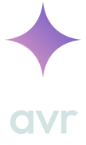
avr — вся экосистема, сайты avthsr.space, общие вещи
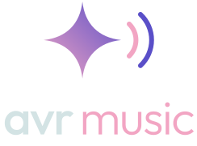
avr music — музыка: сервер, сайт, Android, iPhone
avrtube — видео без рекламы, Android и iPhone
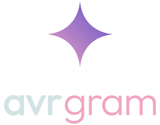
avrgram — Telegram для Android с защитой
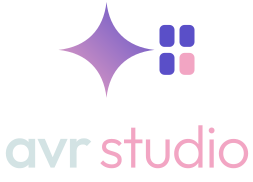
avr studio — витрина проектов (explore.avthsr.space)
Как называть
- Всегда строчными: avr, avr music, avrtube, avrgram, avr studio. Даже в начале предложения.
- Приписка-слово пишется отдельно (avr music, avr studio), приписка-корень — слитно (avrtube, avrgram).
- Новый продукт получает приписку по тому же правилу и ту же звезду — рядом с ней ничего не добавляем.
- Сайты на avthsr.space — это «avr» без приписки. Личный сайт владельца остаётся со своим именем, но в стиле avr. old.avthsr.space — вне стиля (намеренный web 1.0); kgs и lks54 — не наши.
Звезда
Четыре вогнутых луча в квадрате 100 × 100, от розового в фиолетовый. Это главный знак avr: он стоит везде, где есть бренд, и может быть фоном, анимацией, маркером, маской и переходом.
Построение
Каждый луч — кривая Безье от кончика к соседнему кончику: M50 2 C53 30 70 47 98 50, дальше симметрично.
Кончики — на 2 и 98, центр — 50 / 50. Путь целиком лежит в brand/avr.js (STAR_PATH) и в
Brand.kt.
Градиент
Линейный, снизу слева вверх направо: #F2A5C3 → #5A4FC8 (135°). Направление не меняем, третий цвет не добавляем.
Поле и размер
Вокруг звезды свободно хотя бы на четверть её ширины. Меньше 12 px звезду не ставим.
Цветовые версии
Градиент на бирюзе — основной
Градиент на бумаге — светлая тема
Туман — одноцветно на тёмном
Бирюза — одноцветно на светлом, печать
Белая — на фото и цветных заливках, значок уведомления
Чего не делать со звездой
Слева направо: не растягиваем; не перекрашиваем градиент; не делаем контуром; без теней и объёма; не кладём градиентную звезду на пёстрое фото — там белая. И не заменяем звезду символом ✦ или эмодзи.
Звезда и две волны — только у музыки
Основа — просто звезда. У avr music есть свой логотип: та же звезда и справа две звуковые волны — ближняя розовая, дальняя фиолетовая, линии толщиной 6 со скруглёнными концами, всё в поле 140 × 100. Остальным продуктам рядом со звездой ничего не добавляем.
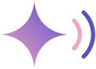
avr music — звезда с волнами
avr, avrtube, avrgram, avr studio и всё новое — просто звезда
- Логотип музыки — для иконки avr music, её заставки, аватара бота, шапки music.avthsr.space. Где речь обо всей семье — одна звезда.
- Волны живые: расходятся, пока играет трек, и по очереди — в лоадере музыки.
- Меньше 32 px волны не читаются — ставим одну звезду.
- Одноцветные версии (белая, бирюзовая) — значок уведомления, монохромная иконка Android, печать:
assets/music/avr-music-white.svg,-teal.svg.
avr + приписка
«avr» — Outfit Medium цветом текста, приписка — Outfit Light акцентом. У приписки-слова узкий зазор (0.14 em), у слитного имени — только смена веса и цвета. Разрядка −0.026 em. Файлы — кривыми, шрифт для показа не нужен.
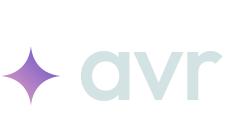
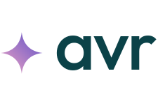
Горизонтальная сборка
Звезда в 0.62 высоты шрифта, по центру строчных букв, зазор 0.16 em. Шапки сайтов, баннеры, подписи. Минимум — 20 px высоты букв.
Вертикальная сборка
Звезда над надписью, по центру (у avr music — звезда с волнами). Заставки, обложки, аватарки, страница «о проекте».
Цвета
На тёмном: «avr» — туман #D3E3E4, приписка — розовый #F2A5C3. На светлом: бирюза #0B4248 и фиолетовый #5A4FC8. Одноцветно — белая или бирюзовая версия.
Нельзя
Заглавные буквы, другой шрифт, одинаковый вес у обеих частей, приписка тем же цветом, что «avr», надпись по кривой, обводка.
Звезда на бирюзовой плитке
Плитка #0B4248 со скруглением 22.5 %, звезда по центру — 56 % ширины; у avr music — звезда
с волнами, 68 %. Продукты на домашнем экране различает подпись. Для Android есть адаптивный передний слой и монохромный слой (тематические иконки).
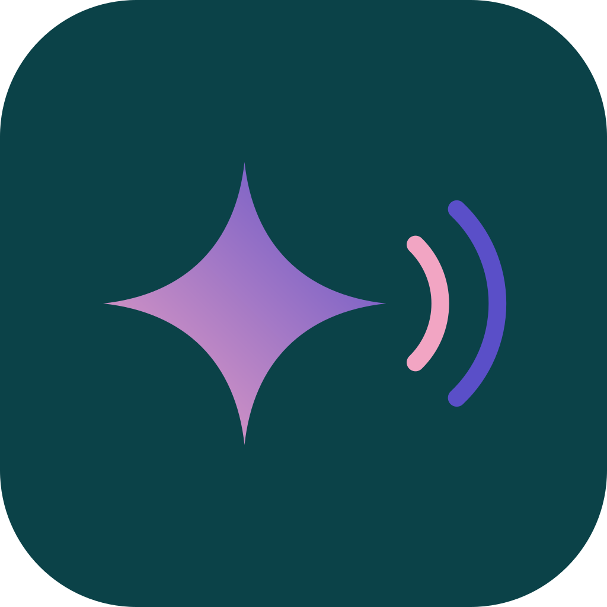
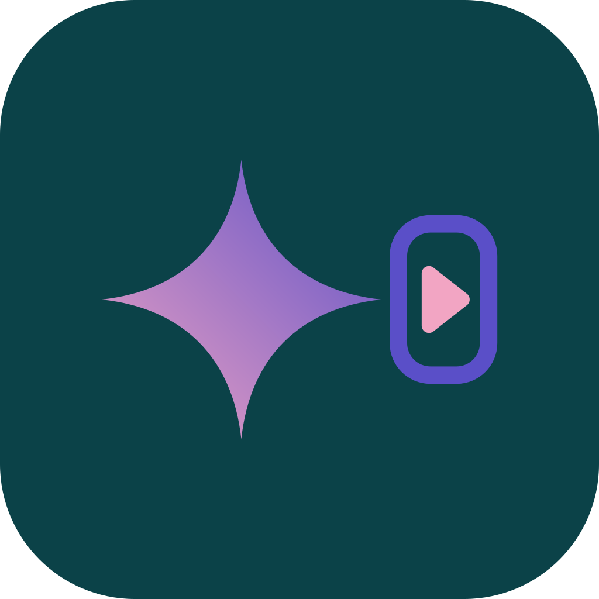
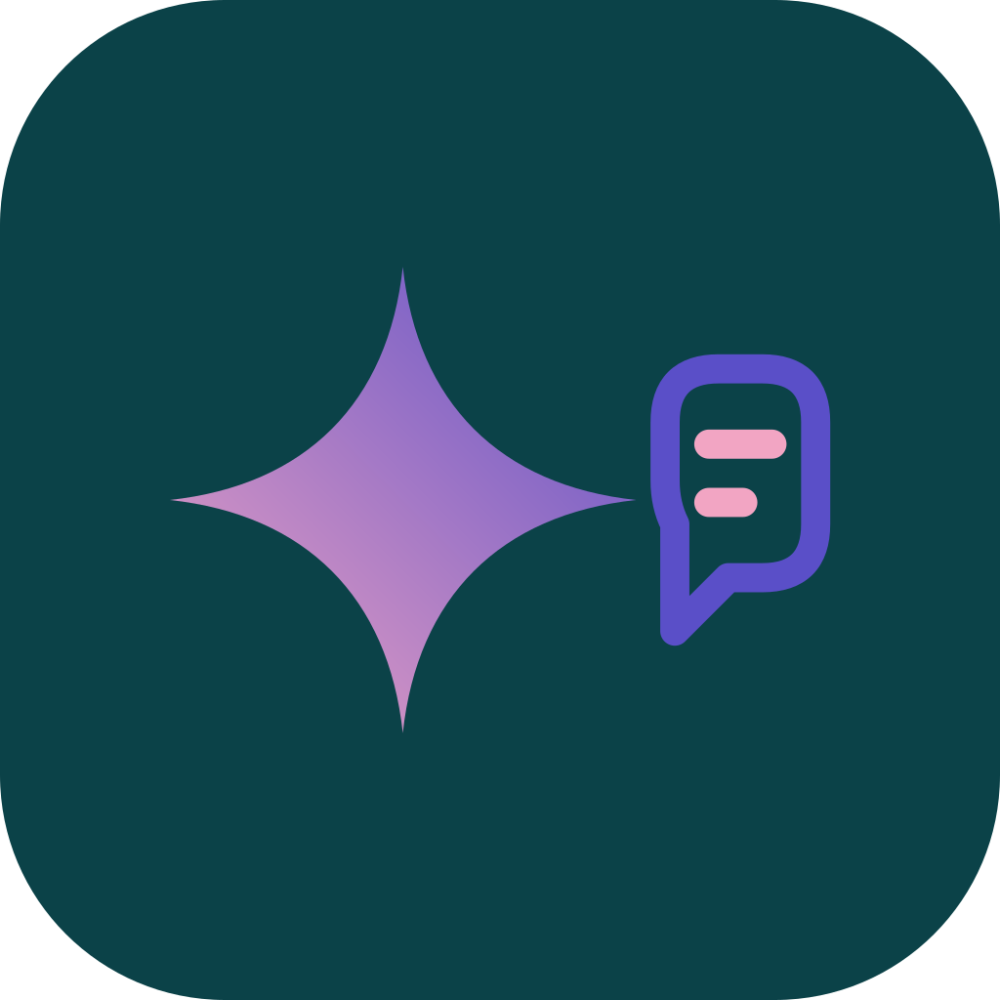
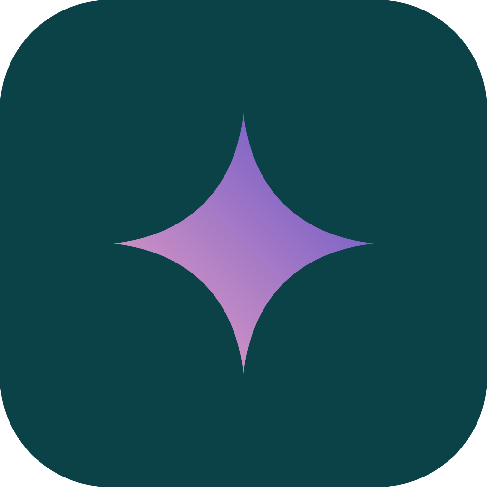
| Где | Файл | Размер |
|---|---|---|
| Android (адаптивная) | icons/<продукт>-adaptive-foreground.svg + фон #0B4248, монохром — -adaptive-monochrome.svg | 108 dp, знак в 66 dp |
| iPhone, магазины, README | icons/png/<продукт>-1024.png | 1024 × 1024 |
| PWA | icons/png/<продукт>-512.png, -192.png | 512, 192 |
| Фавикон любого сайта avr | icons/avr.svg, icons/png/favicon-32.png, -16, -180 (Apple) | 16–180 |
| Уведомление Android | mark/star-white.svg, у музыки — music/avr-music-white.svg | 24 dp, белая |
Бирюза, туман и звезда
Пять цветов бренда и две темы. Тёмная — родная: ночное море. Светлая — бумага. Интерфейс берёт цвета через роли Material 3, бренд — напрямую.
Пропорции
В светлой теме то же самое: бумага, бирюзовый текст, фиолетовый акцент. Розовый и фиолетовый — в малых дозах: кнопка, прогресс, звезда.
Пары, которые читаются
| Пара | Тёмная | Светлая | Правило |
|---|---|---|---|
| Текст на фоне | #D3E3E4 на #0B4248 — 8.4 : 1 | #0B4248 на #E9EFEF — 9.6 : 1 | основной текст |
| Подписи | #A9C4C6 на #0B4248 — 6.0 : 1 | #3E5F63 на #EEF3F3 — 6.2 : 1 | второстепенный текст |
| Акцент текстом | #F2A5C3 на #0B4248 — 5.8 : 1 | #5A4FC8 на #E9EFEF — 5.3 : 1 | ссылки, надписи над заголовком |
| Фиолетовый на бирюзе | 1.8 : 1 | — | никогда текстом; только звезда и волны музыки |
| Розовый на бумаге | — | 1.65 : 1 | никогда текстом; только звезда |
Тяжёлые круглые заголовки, спокойный текст
Google Sans Flex (латиница) и Roboto Flex (кириллица) с осями веса, ширины и округлости. Outfit — только для надписи avr.
- Один заголовок Display на экран. Заголовки — с переносом по балансу, без точки в конце.
- Цифры в колонках и таймерах — моноширинные (
tabular-nums). - Кириллица и латиница в одной строке выглядят как один шрифт — так задумано, не подменяйте ни один из них.
Фон, анимация, переход
Звезда умеет быть фоном, ожиданием, наградой и дверью между продуктами. Всё ниже — живое: это тот же код,
что в avr.css и avr.js. При «уменьшить движение» всё замирает или просто проявляется.
Звёздное поле
Фон героя, входа, заставки, пустых экранов, итогов года. Точки и редкие звёзды мерцают, медленно плывут вверх и
отклоняются от курсора. data-avr-starfield
Созвездие
Звёзды, связанные тонкими линиями, — всё про людей вместе: друзья, «слушать вместе», общие плейлисты.
data-links
Большая звезда
Огромная звезда, срезанная углом, едва заметно поворачивается (один оборот за 140 с). За героем
сайта, на обложках историй и релизов. .avr-bigstar data-corner="tr"
Лоадер и мерцание
Звезда дышит и покачивается, пока что-то грузится дольше 0.4 с. Мерцают маленькие звёзды рядом с новым и «живым»: бейдж
«новое», друг в сети. Не больше трёх на экран. .avr-star-loader, .avr-twinkle
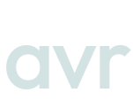
Заставка
Звезда приходит поворотом с −120° и растёт, расходятся кольца, поднимается надпись — 1.1 с, потом всё растворяется в приложении.
У продукта вместо «avr» — его надпись, у музыки ещё и волны. .avr-star-in
Искры и переход
Искры — короткая награда: лайк, принятое приглашение, ачивка, угаданная мелодия. Переход — звезда растёт из точки
нажатия и закрывает экран: только между продуктами avr и в большие моменты (итоги года, игра). sparkle(), starWipe()
Звезда как форма
Кнопка Play может быть звездой на паузе и квадратом во время игры — в avr на главной кнопке экосистемы.
Всё, что звезда ещё умеет
- Маркер списка вместо точки —
ul.avr-stars(как здесь). - Разделитель — линия со звездой посередине,
.avr-divider. - Маска — ачивки и награды можно вырезать звездой:
data-avr-shape="star". - Свечение —
.avr-glow: розово-фиолетовый свет звезды за героем. - Курсор-след и пасхалки — на личном сайте можно больше: звёзды за курсором, звездопад по секретной команде.
Тайминг
| Эффект | Длительность | Кривая | Повтор | «Уменьшить движение» |
|---|---|---|---|---|
| Заставка | 1.1 с + 0.4 с растворение | пружина .34,1.56,.64,1 | раз за запуск | сразу последний кадр |
| Звезда приходит | 0.9 с | пружина | раз | без поворота |
| Лоадер | 1.5 с цикл | ease-in-out | пока ждём | стоит |
| Мерцание | 2.6 с цикл, сдвиг --d | ease-in-out | всегда | стоит |
| Звёздное поле | дрейф 6 px/с, мерцание 0.6–2 рад/с | линейная | всегда, спит вне экрана | один кадр |
| Большая звезда | 140 с на оборот | линейная | всегда | стоит |
| Искры | 0.7–1 с | выход .2,.8,.2,1 | на действие, не чаще раза в секунду | одна звезда проявляется |
| Переход звездой | 0.65 с + 0.32 с | .6,0,.3,1 | на переход | затемнение 0.2 с |
| Волны музыки | 1.1 с цикл | линейная | пока играет | стоят |
Material 3 Expressive в цветах avr
Таблетки-кнопки, карточки без теней, формы-печеньки, пружины и волнистая полоска. Подробно каждый компонент — в
дизайн-системе avr (артефакт) и в brand/README.md.
Формы
Артист — cookie9, человек — cookie12, волна — sunny, акценты — clover, награды — star. Обложки — обычный прямоугольник со скруглением 18.
Как говорим
По-русски, на «вы», коротко и по-человечески. Объясняем, что происходит и что будет дальше.
| Так | Не так |
|---|---|
| Трек ещё скачивается — включу, как только будет готов. | Ошибка 404. Ресурс недоступен! |
| Ничего не найдено — попробуйте другой запрос. | По вашему запросу результатов не обнаружено. |
| У меня есть приглашение | ВОЙТИ В СИСТЕМУ |
| Нет сети — играю то, что скачано. | Отсутствует подключение к интернету 😢 |
| Перенесите библиотеку из Spotify и Яндекс Музыки. | Импортируйте ваши данные из сторонних сервисов!!! |
- Без восклицательных знаков, без эмодзи в интерфейсе, без канцелярита. Кнопка — глагол: «Слушать», «Пригласить».
- Заглавная — только в начале фразы. Буква ё — всегда. Кавычки «ёлочки», тире — длинное с пробелами, перед единицами — неразрывный пробел.
- Английский — вторым языком в i18n; новый текст сначала пишется по-русски.
Как это выглядит снаружи
Иконки семьи на домашнем экране: одна плитка, одна звезда; у музыки — её логотип с волнами.
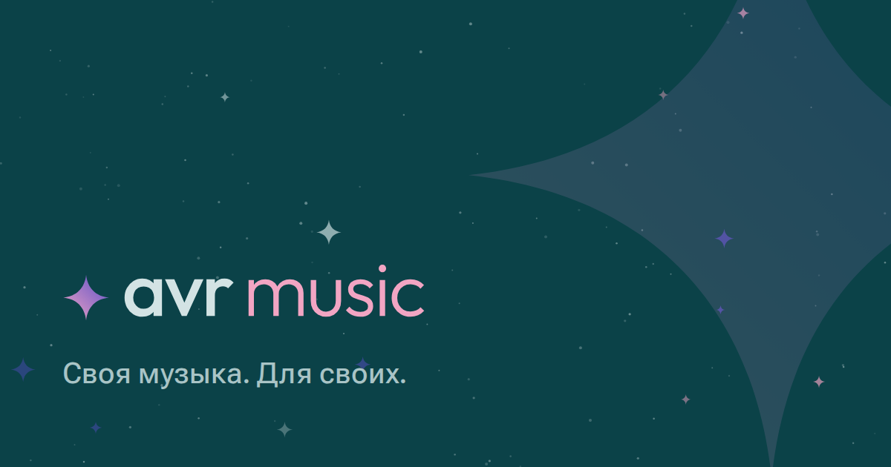
Превью ссылки в Telegram: og-<продукт>.png, 1200 × 630.
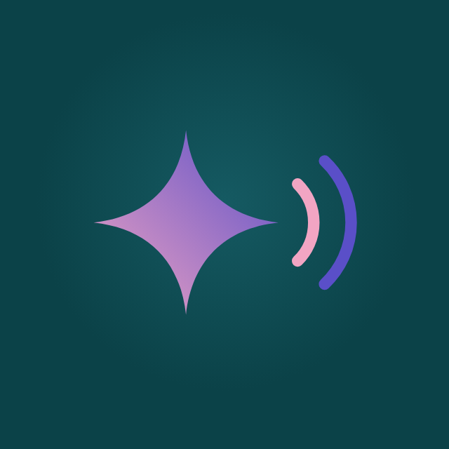
Аватар бота и канала
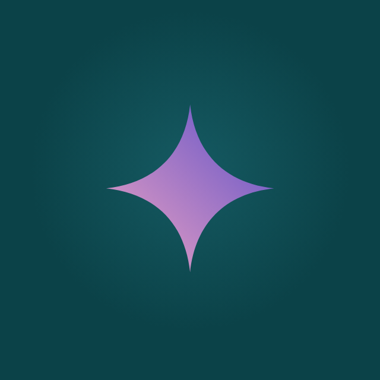
Аватар avrtube
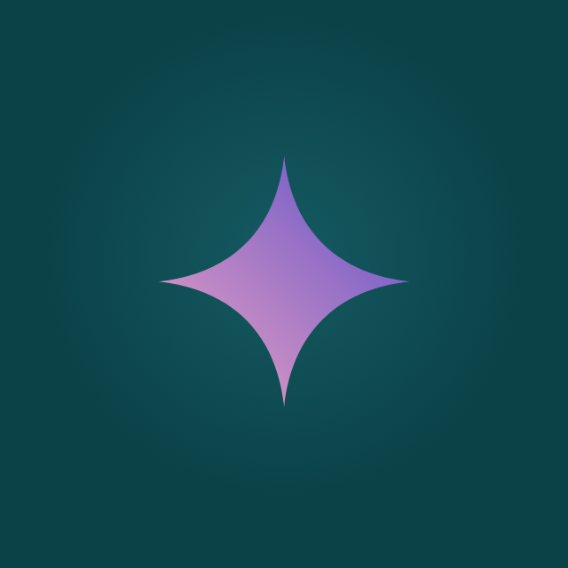
Аватар avrgram
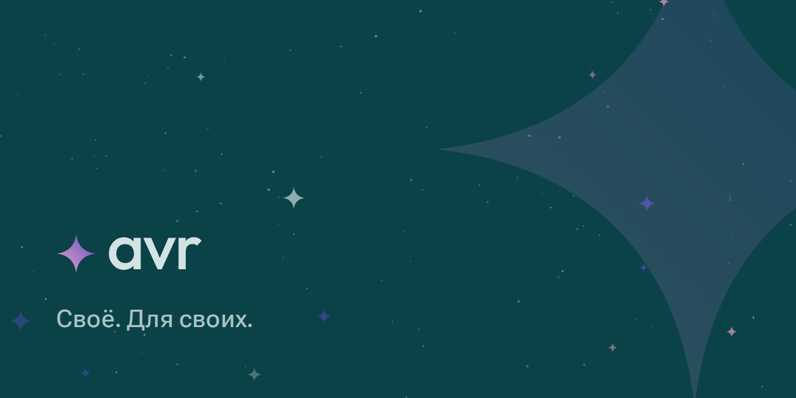
Баннер README и релизов: github-banner.png
Карта применения
Для каждого места — что ставим, какой файл или класс, и в какой момент. Пути — от brand/.
| Где | Что | Файл / код | Когда |
|---|---|---|---|
| Иконка приложения | звезда на бирюзовой плитке (у музыки — с волнами) | assets/icons/<продукт>.svg, icons/png/* | всегда; новый продукт — с первой сборки |
| Заставка приложения | звезда приходит, кольца, надпись продукта | BrandIntro (Compose), .avr-star-in | холодный запуск, 1.1 с, раз за запуск |
| Экран входа и приглашения | звёздное поле + вертикальная сборка | data-avr-starfield, lockups/*-stacked-*.svg | пока человек не вошёл |
| Шапка сайта | горизонтальная сборка, слева | lockups/<продукт>-dark|light.svg | всегда; на телефоне — только звезда |
| Герой лендинга | звёздное поле или большая звезда + свечение | data-avr-starfield / .avr-bigstar + .avr-glow | первый экран; одно из двух, не оба |
| Загрузка | дышащая звезда (у музыки — с волнами) | .avr-star-loader, BrandLoader | ожидание дольше 0.4 с; короче — ничего |
| Пустое состояние | звезда 64–96 px + одна фраза + кнопка | mark/star.svg | пустая библиотека, поиск без результатов |
| Награда | искры из кнопки | sparkle(el), data-avr-sparkle | лайк, ачивка, приглашение принято, угадал мелодию |
| Новое и живое | мерцающая звезда | .avr-star.avr-twinkle | бейдж «новое», друг слушает сейчас; ≤ 3 на экран |
| Люди вместе | созвездие | data-avr-starfield data-links | друзья, «слушать вместе», совпадение вкусов |
| Переход между продуктами | звезда растёт из точки нажатия | starWipe({x, y}, go) | avr music → avrtube и обратно, вход в итоги года |
| Истории, итоги, релизы | большая звезда + надпись продукта | .avr-bigstar, backgrounds/bigstar-*.svg | итоги месяца и года, новости, заметки к релизам |
| Превью ссылки | картинка 1200 × 630 | assets/social/og-<продукт>.png в og:image | на каждой странице сайта |
| Фавикон | звезда на плитке | icons/avr.svg + favicon-32/16/180.png | все сайты avthsr.space (кроме old, kgs, lks54) |
| Бот, канал, профиль | звезда в круге (у музыки — с волнами) | assets/social/avatar-<продукт>.png | аватар бота avr music и будущих ботов |
| Уведомления | одноцветный знак | mark/star-white.svg, music/avr-music-white.svg | значок в строке состояния Android |
| GitHub | баннер + иконки | assets/social/github-banner.png | README, страницы релизов |
| Списки и разделители | звезда-маркер, линия со звездой | ul.avr-stars, .avr-divider | лендинги, «о проекте», брендбук |
| Личный сайт | всё выше + пасхалки | звёздное поле в терминале, звездопад по команде | при переделке avthsr.space, все старые пасхалки сохраняются |
В каком порядке
Порядок — по тому, что люди видят чаще. Каждый шаг — коммит в репозиторий и выкладка через GitHub Actions.
Основа
Брендбук, дизайн-система, файлы в brand/assets, звезда в avr.css и avr.js. Готово.
Сайты
avthsr.space и explore: шапка-сборка, фавикон, превью ссылок, герой со звёздным полем или большой звездой. old, kgs, lks54 — не трогаем.
avr music
Звёздное поле на входе и в «Что такое avr music», искры на лайк и ачивки, созвездие у друзей, аватар бота. Перенести эффекты в Compose.
avrtube
С первого релиза: иконка, заставка, тема avr, переход звездой из музыки в видео и обратно.
avrgram
С первого релиза: иконка, тема avr поверх AyuGram, аватар, звезда в экране блокировки по паролю.
Новое
Любая новая вещь начинается с этой страницы: имя по правилу, знак по правилу, место из карты выше.
Где что лежит
| Путь | Что |
|---|---|
brand/avr.css, brand/avr.js | стиль сайта целиком: цвета обеих тем, шрифты, компоненты, звезда во всех видах |
brand/assets/mark/ | звезда: градиент, туман, бирюза, белая, розовая, фиолетовая |
brand/assets/music/ | логотип avr music (звезда с волнами): цветной, белый, бирюзовый |
brand/assets/wordmarks/, lockups/ | надписи и сборки каждого продукта: тёмная, светлая, белая, бирюзовая; горизонтальные и вертикальные |
brand/assets/icons/ | иконки приложений (SVG, PNG 1024/512/192), адаптивные слои Android, фавиконы |
brand/assets/backgrounds/, social/ | звёздное поле, большая звезда, превью ссылок, баннер GitHub, аватары |
brand/tools/build.py, render.mjs | генераторы: всё выше рисуется из одной геометрии — меняйте её там, а не в файлах |
android/shared/…/ui/Brand.kt | то же в Compose: цвета, BrandMark, Wordmark, BrandLoader, LiveMark, BrandIntro |
Подключить на сайт
<link rel="stylesheet" href="/brand/avr.css"> и <script type="module" src="/brand/avr.js"></script>.
Тема — <html data-theme="light|dark">, без атрибута решает система. Звёздное поле — data-avr-starfield на секции,
искры — data-avr-sparkle на кнопке, переход — starWipe({x, y}, () => location.href = '…').